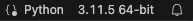

Virtual environments¶
Een virtual environment is een map waarin packages staan. De virtual environment geef je een naam bijvoorbeeld my_env. Je kunt een virtual environment vergelijken met een gereedschapskist. Wanneer je een environment activeert kies je een gereedschapskist om de klus te klaren. welke gereedschapskist je kiest bepaald welke packages je tot je beschikking hebt.

Een virtual environment met de naam my_env. Een virtual environment is als een gereedschapskist met daarin packages.
Lijst van bestaande environments bekijken¶
Door gebruik te maken van virtual environments kan je voorkomen dat er een package conflict ontstaat. Packages zijn vaak afhankelijk van andere packages en daarbij kan het uitmaken welke versie van het package je gebruikt.
Stel package A heeft package B nodig met versie >= 1.1, maar package C heeft package B nodig met versie 1.0. Nu kunnen packages A en C dus niet tegelijkertijd geïnstalleerd worden.
Daarom is het handig om voor elke project de packages in een geïsoleerde omgeving te installeren. Een virtual environment is zo'n geïsoleerde omgeving. Je kan dan niet alleen verschillende packages en versies uit elkaar houden maar zelfs verschillende Python versies.
Je kunt een lijst met virtual environments opvragen met
(ECPC) > conda env list
# conda environments:
#base path\to\environment\with\name\base
#my_env path\to\environment\with\name\my_env
#project_a path\to\environment\with\name\project_a
#project_b path\to\environment\with\name\project_b

Je kan meerdere virtual environments aanmaken. In elke environment zitten packages specifiek voor een project. Hier zijn 3 verschillende virtual environments weergegeven met elk een andere naam: my_env, project_a en project_b.
Zoals je ziet is base ook een virtual environment. Daarin zitten standaard een aantal handige packages in, maar wanneer je een package nodig hebt die er niet inzit is het handig om voor dat project een eigen virtual environment aan te maken. Daarmee voorkom je package conflicten in je base environment.
Het kan natuurlijk gebeuren dat je alsnog een package conflict krijgt in je project environment of dat de packages ineens niet meer werken. Dan kun je heel gemakkelijk de virtual environment weggooien en een nieuwe aan schaffen. Om weer een werkende base environment te krijgen is het vaak nodig om heel Anaconda opnieuw te installeren. Gebruik de base daarom alleen voor de basis en maak een nieuw environment voor al je projecten!
Activeren en deactiveren¶
Om aan te geven welke virtual environment je wilt gebruiken om je scripts uit te voeren moet je de virtual environment activeren.
Terminal¶
Om een virtual environment te activeren in een terminal maak je gebruik van de onderstaande code. Je ziet daarna de naam van de geactiveerde environment tussen ronde haakjes staan.
(ECPC) > conda activate my_env
(my_env) >
(ECPC) > .my_env\Scripts\activate
(my_env) >

In een terminal wordt tussen ronde haakjes weergegeven welke virtual environment actief is.
Om een virtual environment te deactiveren in een terminal maak je gebruik van de onderstaande code. Je ziet daarna weer de naam van de base environment tussen ronde haakjes staan.
(ECPC) > conda deactivate
(base) >
(ECPC) > deactivate
?
Visual Studio Code¶
In Visual Studio Code zit ook een terminal maar wanneer je een environment in deze terminal activeerd betekend dit niet dat Visual Studio Code ook van dat environment gebruik maakt. Om een environment in Visual Studio Code te activeren moet je een python bestand openen en daarna rechtsonder, in de statusbalk, kijken welke environment geactiveerd is.

Het kan ook zijn dat er nog geen environment is geactiveerd dan staat er 'select Python interperter'. In beide gevallen kan je daarop klikken1 er verschijnt dan bovenaan het scherm in het midden een lijst met Python environments.2 Kies de omgeving die je wilt gebruiken. Let op: als je het environment net hebt aangemaakt dan staat hij er nog niet tussen. Klik dan rechtsbovenin eerst op het Refresh Interpeter list-knopje.
Virtual environment aanmaken¶
Om een nieuwe virtual environment aan te maken met de naam my_env gebruik je onderstaande code. Er wordt aangegeven op welke locatie de environment wordt aangemaakt en welke packages erin worden geïnstaleerd. Als je tevreden bent met de locatie en inhoud druk je Y+Enter om door te gaan.
(ECPC) > conda create --name my_env
Retrieving notices: ...working... done
Channels:
- defaults
Platform: osx-arm64
Collecting package metadata (repodata.json): done
Solving environment: done
## Package Plan ##
environment location: path\to\environment\with\name\my_env
Proceed ([y]/n)?
(ECPC) > uv venv my_env
?

Een virtual environment is als een gereedschapskist met een label waarop de naam is weergegeven.
De inhoud van een virtual environment bekijken¶
Nadat je de environment hebt geactiveerd (zie environment activeren) kun je met de onderstaande code zien wat er in zit.
(my_env) > conda list
# packages in environment at path\to\environment\with\name\my_env:
#
# Name Version Build Channel
Er staat daadwerkelijk niets, de environment is helemaal leeg. Om de environment te vullen met packages moet je package installeren

Wanneer je met conda een virtual environment aanmaakt en alleen de naam meegeeft, is de environment helemaal leeg.
(my_env) > uv pip list (?)
?
Er zit alleen python en pip in.

Wanneer je met venv een virtual environment aanmaakt en alleen de naam meegeeft, zit alleen Python en pip erin.
of?

Wanneer je met venv een virtual environment aanmaakt en alleen de naam meegeeft, zit alleen pip erin.
Packages installeren¶
Nadat je de environment hebt geactiveerd (zie environment activeren) kun je packages in de virtual environment installeren, dit kun je met de onderstaande code doen.
Merk op dat je meerdere packages tegelijk kunt installeren, in dit geval installeren we Python en SciPy tegelijkertijd. Ook is het mogelijk om een specifieke versie aan te geven, bijvoorbeeld Python=3.10
(my_env) > conda install python=3.10 scipy
Retrieving notices: ...working... done
Channels:
- defaults
Platform: osx-arm64
Collecting package metadata (repodata.json): done
Solving environment: done
## Package Plan ##
environment location: path\to\environment\with\name\my_env
added / updated specs:
- python=3.10
- scipy
...
Merk op dat je meerdere packages tegelijk kunt installeren, in dit geval installeren we SciPy en Lmfit tegelijkertijd.
(my_env) > uv pip install scipy lmfit
????
Je kan ook gelijk bij het aanmaken van de virtual environment aangeven welke packages je erin wilt hebben.
(ECPC) > conda create --name my_env python=3.10 numpy
Channels:
- defaults
Platform: osx-arm64
Collecting package metadata (repodata.json): done
Solving environment: done
## Package Plan ##
environment location: path\to\environment\with\name\my_env
added / updated specs:
- numpy
- python=3.10
...
Daarna kun je de nieuwe virtual environment activeren om te gebruiken.
Wanneer je nu opnieuw kijkt wat er in de virtual environment zit dan zie je dat er naast Python nog vanalles is meegenomen waaronder pip en andere dingen.

Bij het installeren van Python met conda in een virtual environment komen er meerder package mee waaronder pip.
Dependencies¶
Packages hebben vaak andere packages nodig om goed te werken, ze zijn dus afhankelijk van andere packages. Bij het installeren komen deze depencies mee en worden ze ook in de virtual environment geïnstalleerd. Als je bijvoorbeeld scipy installeerd komt NumPy mee.

Bij het installeren van SciPy in een virtual environment komt onder andere NumPy mee.
Maar andersom komt SciPy niet mee met NumPy.

Bij het installeren van NumPy in een virtual environment komt SciPy niet mee.
Om je te laten weten welke packages precies worden geïnstalleerd laat Conda laat altijd een lijstje zien van dingen die geïnstalleerd worden. Vervolgens moet jij aangeven of je door wilt gaan.
Environment weggooien¶
Het kan gebeuren dat een environment niet goed lijkt te werken. Dan kan je een hele zoektoch starten om erachter te komen waardoor dat komt, maar vaak kun je het oplossen door het environment weg te gooien en een 'schone' aan te maken. Het weggooien doe je als volgt.
(ECPC) > conda env remove --name my_env
Remove all packages in environment path\to\environment\with\name\my_env:
Everything found within the environment (path\to\environment\with\name\my_env), including any conda environment configurations and any non-conda files, will be deleted. Do you wish to continue?
(y/[n])?
Je kan ook de oude environment overschrijven door een nieuwe aan te maken met dezelfde naam, dan komt er wel een waarschuwing dat er al een environment met dezelfde naam bestaat en of je die wilt overschrijven.
(ECPC) > conda create --name my_env
WARNING: A conda environment already exists at 'path\to\environment\with\name\my_env'
Remove existing environment (y/[n])?
Package updaten¶
Heb je net gister een nieuwe virtual environment aangemaakt zie je dat er vandaag een update is uitgekomen met een functie die jij nu nodig hebt. Gelukkig hoef je dan niet gelijk de environment weg te gooien en een nieuwe aan te maken maar kan je ook de package updaten. Nadat je de environment hebt geactiveerd (zie environment activeren) kun je een package in de virtual environment updaten met de onderstaande code doen.
In dit voorbeeld updaten we de package NumPy.
(my_env) > conda update numpy
Channels:
- defaults
Platform: osx-arm64
Collecting package metadata (repodata.json): done
Solving environment: done
## Package Plan ##
environment location: path\to\environment\with\name\my_env
added / updated specs:
- numpy
The following packages will be UPDATED:
numpy 2.0.2-py312h7f4fdc5_0 --> 2.2.4-py312hcef5695_0
numpy-base 2.0.2-py312he047099_0 --> 2.2.4-py312hb71ad10_0
Proceed ([y]/n)?
Pip vs Conda¶
De officiële Package Installer for Python is pip.
pip
Je kunt met pip alle Python packages installeren die bestaan uit Python code. NumPy bijvoorbeeld bevat echter ook veel code geschreven in C. Die code moet eerst gecompileerd worden. Dat kan pip óók doen, mits er een C compiler op je computer geïnstalleerd is. Via de Python package index kunnen gelukkig ook zogeheten binary packages verspreid worden waarin de code al is gecompileerd. Er zijn dan losse packages voor Windows, MacOS en Linux. Meestal gaat dit goed, maar helaas niet altijd. Historisch waren NumPy maar vooral ook SciPy een flink probleem. Ook het gebruik van grafische bibliotheken ging vaak moeizaam. Dan was het package wel geïnstalleerd, maar riep hij dat hij systeembibliotheken niet kon vinden. Heel vervelend.
Een ander probleem van pip is dat deze — tot voor kort — geen controle deed op de versies van al geïnstalleerde pakketten. Je kon dus packages installeren die nieuwe versies binnenhaalden van andere packages, waarna al eerder geïnstalleerde packages soms stopten met werken.
Omdat pip wat beperkt werkte en vooral bij NumPy en SciPy problemen opleverde is conda ontwikkeld die vooral populair geworden is in de wetenschappelijke wereld.
conda
Conda installeert alleen binary packages, kan naast Python packages ook systeembibliotheken installeren als dat nodig is én doet een uitgebreide controle op alle versies van te installeren en al eerder geïnstalleerde packages zodat alles altijd blijft werken. Nadeel is dat die controle nogal lang kan duren als je al veel geïnstalleerd hebt. Omdat je met conda dus wel heel makkelijk uitgebreide wetenschappelijke packages kon installeren met een mix van Python-, C-, of zelfs Fortrancode is conda (en Anaconda, de distributie) heel populair geworden in de wetenschappelijke wereld.
Pip installeerd packages uit de Python Package Index (PyPI). Conda installeerd packages uit channels. Standaard haalt conda packages uit de default channel, maar je kan ook aangeven dat je packages uit een andere channel wilt halen bijvoorbeeld uit de conda-forge channel.
Het installeren met behulp van pip of conda is te vergelijken met het winkelen bij verschillende winkelketens. Het assortiment is deels hetzelfde maar niet helemaal gelijk. Ook is de services verschillend, zo krijg je er bij Conda gratis systeembibliotheken bij. De conda-forge channel is een winkel die door een community beheerd wordt, een grote groep contributors bepalen samen welke packager er te halen zijn en welke dependencies je er gratis bij krijgt.
conda-forge
Conda installeert packages vanuit verschillende channels. De defaults channel bevat packages die af en toe door Anaconda worden getest en samengenomen tot een distributie (versie 2021.05 bijvoorbeeld). Er zijn weinig updates. De conda-forge channel bevat alle nieuwste versies van die packages en bevat ook software die (nog) niet in de defaults channel terecht is gekomen. De conda-forge channel is daarom erg populair, maar er gaat ook regelmatig iets stuk.
PyPI (Python Package Index), conda default channel en conda-forge channel kun je zien als verschillende winkels waar je packages vandaan kunt halen. Het aanbod en de service verschilt per channel. pip haalt de packages altijd bij PyPI, bij conda kun je aangeven uit welke channel je de packages wilt installeren.
Installeren uit een channel¶
Je kunt packages uit de conda-forge channel in je virtual environment installeren, nadat je de environment hebt geactiveerd (zie environment activeren), door dit specifiek aan te geven.
(my_env) > conda install --channel conda-forge lmfit
Channels:
- conda-forge
- defaults
Platform: osx-arm64
Collecting package metadata (repodata.json): done
Solving environment: done
## Package Plan ##
...
Het is ook mogelijk om gelijk bij het aanmaken van een nieuwe virtual environment aan te geven uit welke channel je packages wilt installeren.
(ECPC) > conda create --name my_env --channel conda-forge pandas matplotlib lmfit
Channels:
- conda-forge
- defaults
Platform: osx-arm64
Collecting package metadata (repodata.json): done
Solving environment: done
## Package Plan ##
...
Poetry¶
Als je Poetry gebruikt als dependencie manager (zie hoofdstuk Poetry) dan moet je er rekening mee houden dat Poetry achter de schermen pip gebruikt om packages te installeren. Dus als je eerst met conda een virtual environment aanmaakt en alleen een naam opgeeft, dan zit er niets in de virtual environment. Ook pip zit er niet in, waardoor Poetry niets kan installeren.
Wanneer je met conda een virtual environment aanmaakt en alleen de naam meegeeft, is de environment helemaal leeg. Er zit ook geen pip in de environment waardoor Poetry geen packages met pip kan installeren.
Pipx¶
Sommige packages zijn niet meer een stukje gereedschap wat je gebruikt bij je eigen werk maar eerder een volledige applicatie die je opzich zelf kan gebruiken. Een voorbeeld hiervan is gammaspotter een applicatie gemaakt door studenten tijdens het eindfeest.
Je kan zelf een virtual environment aanmaken en de package daarin installeren. Maar omdat het meer een applicatie is zal je bij het gebruik ervan steeds de environment moeten activeren en daarna de applicatie aanroepen. Als je vervolgens een andere environment activeert is de applicatie niet meer beschikbaar. Ook kan het gebeuren dat je packages update of verwijdert waardoor de applicatie niet meer werkt. Met pipx is het mogelijk om dit soort applicaties in een eigen virtual environment te installeren. Je loopt geen risico dat je ze stukmaakt en ze zijn beschikbaar vanuit andere virtual environments.

Wanneer je met pipx een Python applicatie instaleerd wordt deze in een eigen virtual environment geplaatst.
Pipx installeren¶
Om Pipx te kunnen gebruiken moet je het eerst installeren met behulp van pip.
> python -m pip install --user pipx
collecting pipx
...
Successfully installed argcomplete-3.6.2 click-8.1.8 colorama-0.4.6 packaging-24.2 pipx-1.7.1 platformdirs-4.3.7 userpath-1.9.2
Zorg ervoor dat de map waarin pipx apps opslaat, is opgenomen in je PATH omgevingsvariabele. Dit zorgt ervoor dat je deze apps altijd vanuit de terminal kunt aanroepen. Dit doe je met onderstaande code.
> python -m pipx ensurepath
Success! Added C:\Path\to\.local\bin to the PATH environment variable.
Success! Added C:\Path\to\Python\Python313-arm64\Scripts to the PATH environment variable.
Consider adding shell completions for pipx. Run 'pipx completions' for instructions.
You will need to open a new terminal or re-login for the PATH changes to take effect. Alternatively, you can source your shell's config file with e.g. 'source ~/.bashrc'.
Otherwise pipx is ready to go! ✨ 🌟 ✨
De laatste zin is opvallend Otherwise pipx is ready to go! ✨ 🌟 ✨
, blijkbaar moet er nog iets gebeuren voordat we pipx kunnen gebruiken. Als we alle informatie doorlezen zien we een paar suggesties maar ook een dwingend advies You will need to open a new terminal or re-login for the PATH changes to take effect.
Herstart je terminal en test of het commando pipx werkt. Als je in een terminal in Visual Studio Code werkt moet je dat ook herstarten en als je VS Code gestart hebt vanuit GitHub Desktop moet je óók dat herstarten. Werkt het nog steeds niet, dan zul je volledig uit moeten loggen en weer in moeten loggen om de shellomgeving opnieuw te laden en/of vraag om hulp.
Apps installeren met pipx¶
Wanneer een applicatie als package beschikbaar is op PyPI kun je deze als volgt met pipx installeren:
Raadpleeg de documentatie van de applicatie om erachter te komen hoe je de applicatie vanuit de temrinal kunt starten.
Je kunt een lijstje krijgen van alle applicaties die je met pipx hebt geïnstalleerd met
> pipx list
venvs are in /Path/to/.local/pipx/venvs
apps are exposed on your $PATH at /Path/to/.local/bin
manual pages are exposed at /Path/to/.local/share/man
package canvas-course-tools 0.10.3, installed using Python 3.13.0
- canvas
package ecpcgrading 1.3.0, installed using Python 3.13.0
- ecpcgrading
package feat-feedback-tool 1.0.0, installed using Python 3.12.4
- ft.
package poetry 1.8.4, installed using Python 3.13.0
- poetry
package prune-envs 1.1.0, installed using Python 3.13.0
- prune-envs
Daar zie je ook meteen welke versie is geïnstalleerd. Wil je de nieuwste versie installeren gebruik dan: